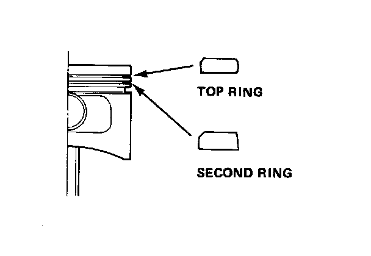
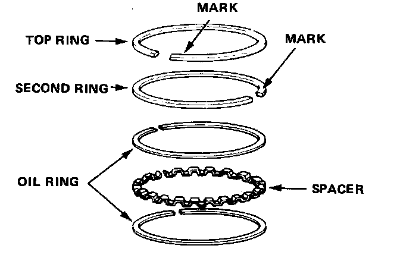
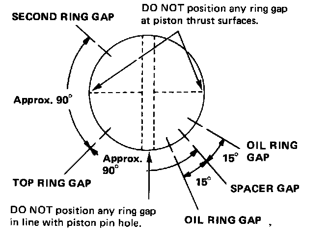

Cylinder Block Assembly: Service and Repair
Alignment
1. Install the rings.

Identify top and second rings by the chamfer on the edge, and make sure they are in proper grooves on piston.
2. Rotate the rings in grooves to make sure they do not bind.

3. The manufacturing marks must be facing upward.

4. Position the ring end gaps as shown: